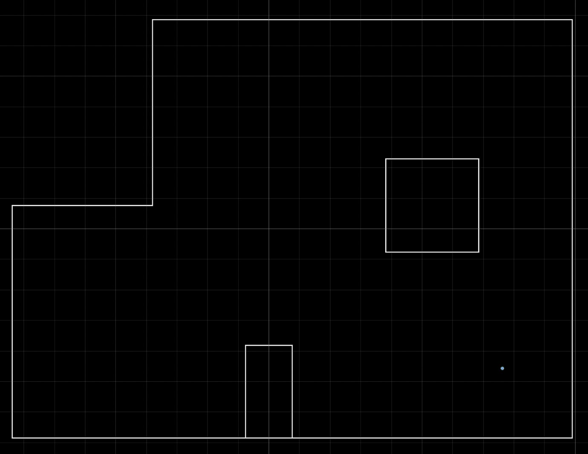
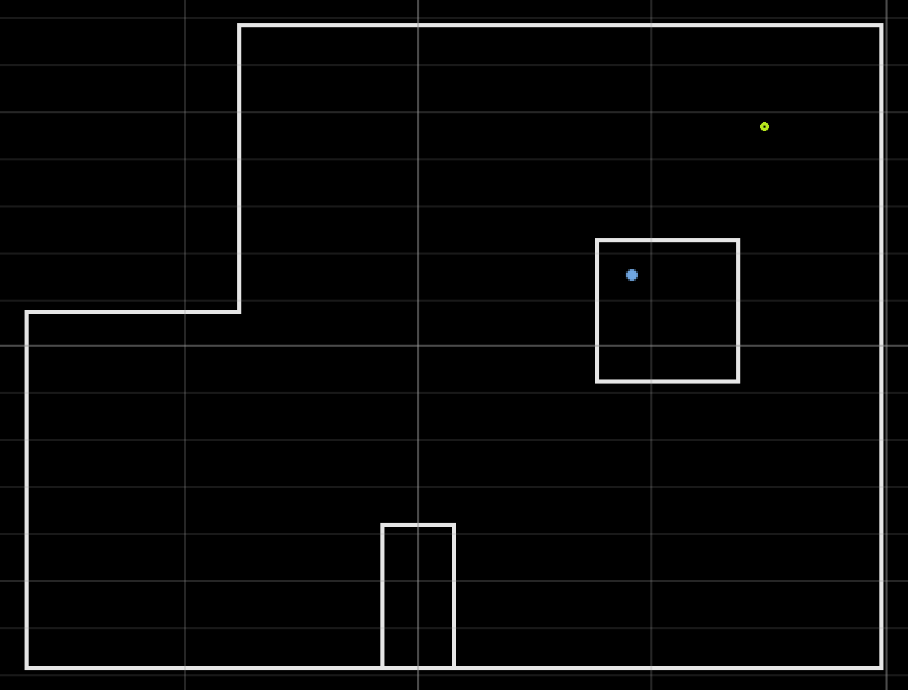
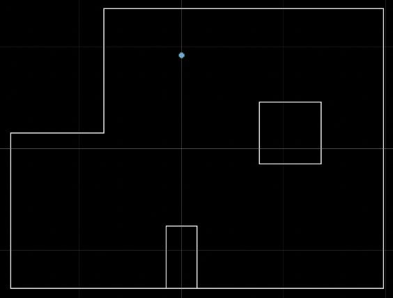
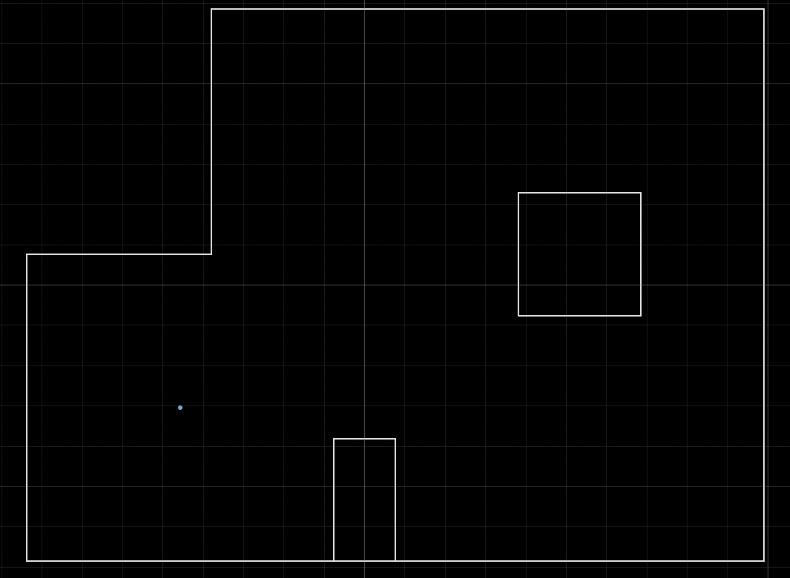

Objective
In lab 10, I used a Bayes Filter to implement grid localization, but this time on the actual robot. We were unable to use the prediction step in this algorithm, since the robot's control is so noisy. However, this contributes to the overall goal of the lab, as it was meant to see the difference between simulation and real-world systems.
I worked with Eshita Sangani on this lab.
Simulation
These were the results from the last lab, which was in simulation.
As you can see, the belief, shown in blue, is not too different from the ground truth, shown in green. Thus, I was able to move on to this lab.
Observation Loop
I started by going through the skeleton notebook that was provided and integrating this with the localization code. The first step of this was implementing the perform_observation_loop function in the class RealRobot. The purpose of this functionw was to have the robot do a 360 degree turn while collecting angular sensing data. The robot began in the same orientation everytime.
To integrate the real robot's data with the simulator, I needed 18 points of data at each of the marked map points. To do this, I adapted my code from lab 9. This (theoretically) recorded 15 measurements every second for a total of 150 data points, and usually in increments of 40 degrees. However, due to the number of degrees it was able to take data at, the data was not accurate. Thus, instead of having the target be 40 deg/s, it was changed to be 15 deg/s.
Additionally, the times at which the ToF data was sent over bluetooth was modified. Before, the ToF data was collected continuously and all of the data was sent at the end of the spin. After the modification, the robot would first ensure that the desired angle was met, and then execute the PID and send the command over via bluetooth. The code is below.
After all of this, I implemented the perform_observation_loop function to call this case, with the added notification handler as seen below.
As you can see, over_handler, the notification handler for receiving the data, parses out the time, ToF, and angular velocity readings. The function essentially just tranposes the data to match the format required.
Running the Localization
The following images show the results of running the localization.
(5,-3)
Belief: (1.52,-0.914,150.000), Truth: (1.52,-0.914,90)
(5,3)
Belief: (0.914, 0.305, -70.000), Truth: (1.52,0.914,90)
(0,3):
Belief: (0.000, 0.914, 90.000), Truth: (0.000, 0.914, 90.000)
(-3,-2)
Belief: (-0.914, -0.914, -90.000), Truth: (-0.914, -0.914, 90.000)
Localization ran fairly well for these runs, with the exception of the second, in which the robot somehow localized to be inside of the obstacle. Due to the accuracy of the others, I'm inclined to believe thtat this was due to faulty readings of the distance data rather than the localization itself.
One thing to note is that the process to get this data took much fine tuning. This included (as mentioned above) readings sometimes not processing, and difficulty with using data that was taken as the robot spun clockwise vs counterclockwise.
As with before, areas with more walls made it more difficult for the robot to localize, as seen above. Also, the battery drainage was a significant issue and would cause the wheels to react in ways that were not expected.
With the exception of the second trial, the robot seemed to localize accurately (except for orientation, again maybe due to the wall issue? or one of the other issues mentioned previously) and can probably be used for lab 12!